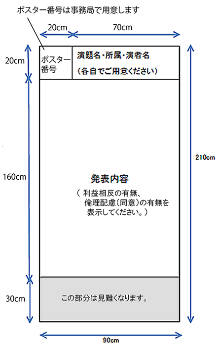

採択演題一覧
多数のご応募をいただき、ありがとうございました。
採択された演題の一覧を掲示いたします。
採択演題一覧
採択情報は登録番号順です。
演題登録時に発行されている登録番号をご用意の上ご確認ください。
発表について
今学術集会は、現地開催を予定しており、一般演題は全てポスター発表となります。
- 採択された演者は、ポスターを作成いただき、会期当日ポスター会場に貼付してください。
- ポスター発表は、各日に30分ほどカテゴリー毎にコアタイムを設定いたします。
演者の方は、コアタイムに自身のポスターの前に立ち、質疑応答を行ってください。 - ポスターパネルは、高さ210cm、横幅90cmです。

優秀賞候補演題
下記の通り採択演題より優秀賞候補演題を選出いたしました。
- 優秀賞候補演題は、12月11日（日）15:40～16:40 に口演を行い、最優秀賞１題と優秀賞1題を選出いたします。
- 優秀賞候補演題の演者は、ポスターと口演発表スライドを作成してください。
- 発表：7分 質疑：3分です。
優秀賞候補演題
| 登録番号 | 演題名 |
|---|---|
| 10002 | 体組成計からみた廃用性浮腫の特徴ならびに薬剤性浮腫との関係 |
| 10032 | 高齢透析患者の「自分の足に触れる」行為の実態と足トラブルの現状 |
| 10046 | 包括的高度慢性下肢虚血により下腿切断となったが、義足着用し主婦業を再獲得できた一症例 |
| 10075 | 組織酸素飽和度カメラ（Snapshot）による足部血流評価の有用性 |
| 10077 | 糖尿病患者における足趾屈曲筋力は糖尿病神経障害の評価に有用である |
| 10089 | フットケア地域連携パスを使用した創傷改善への介入効果 |
お問合せ
連絡事務局
株式会社コンベックス内
〒106-0041 東京都港区麻布台1-11-9 BPRプレイス神谷町
TEL：03-3505-1600 FAX：03-3505-3366
E-mail：jfcpm2021@convex.co.jp